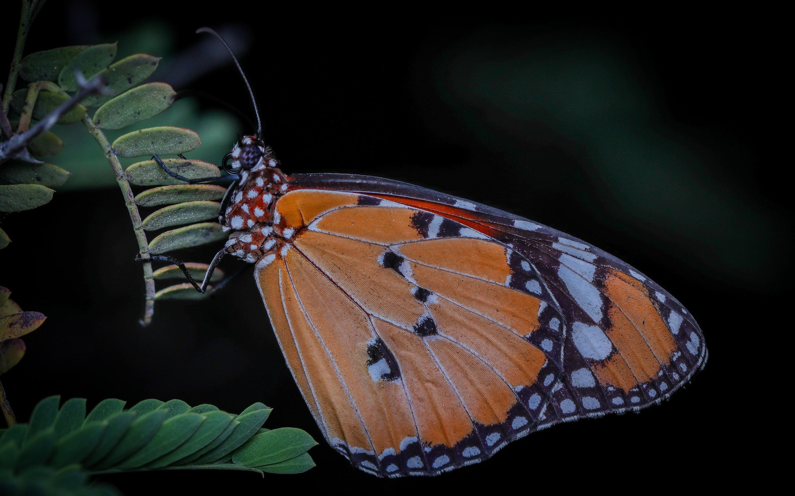
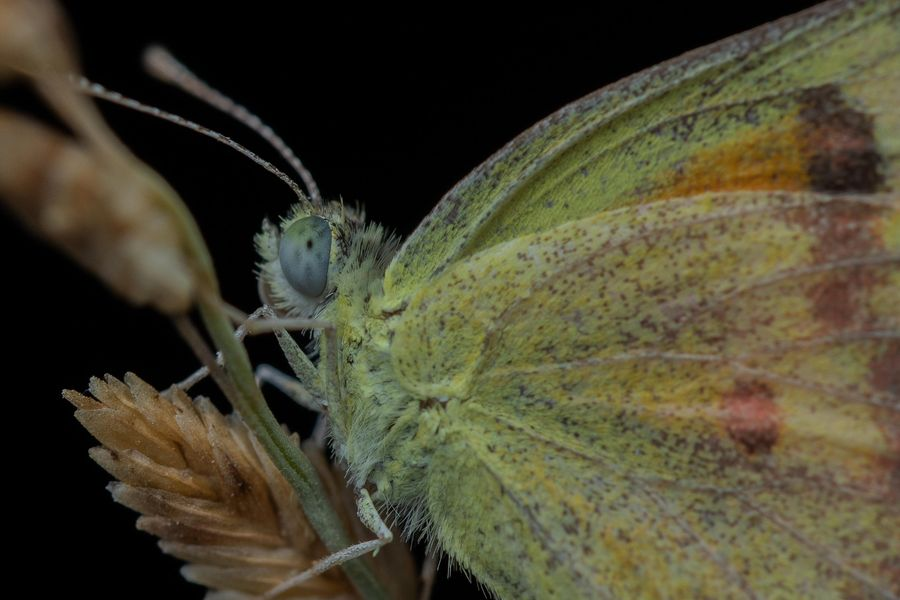
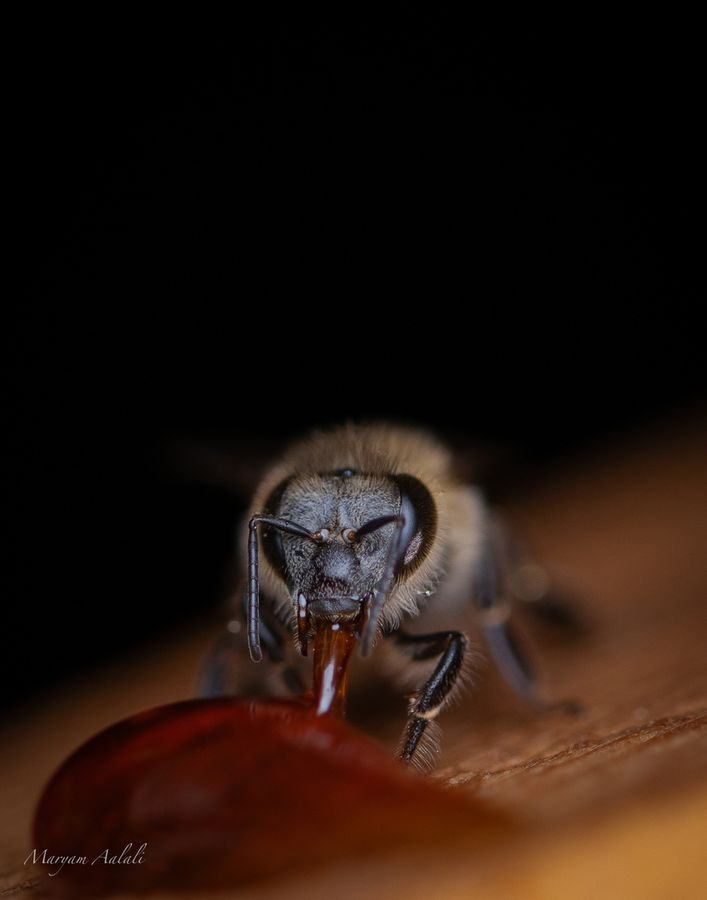
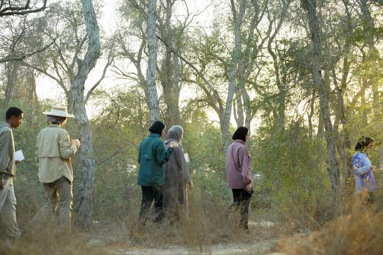
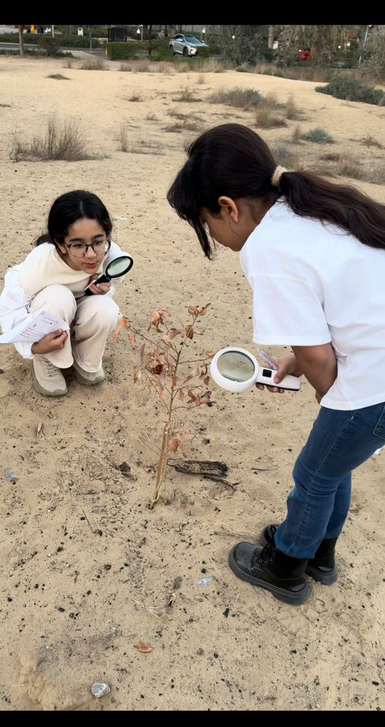
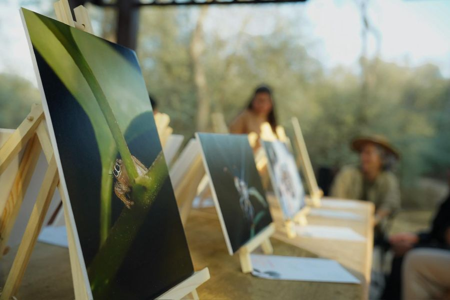

Loupe ×2.5 · move across the wing
Emirati macro photographer · UAE biodiversitySee what
I see.
I photograph the insects, spiders and small lives of the UAE, close enough to see what the eye usually misses.
Maryam Aalali · مريم آل علي
Every small creature has a role in our ecosystem, and a story worth preserving.
I'm an Emirati photographer documenting the biodiversity of the UAE. Through macro photography I explore tiny worlds and hidden details that often go unnoticed, and share them through exhibitions, exploration trips and educational workshops.
Read my story →Macro documentation of UAE biodiversity
Selected works
In the field
Projects
Local documentation, exploration trips, children's trips, educational photography workshops and outdoor exhibitions.
Macro documentation of UAE biodiversity
A growing visual record of local species.

Documenting the beauty of bees
Honeybees and solitary bees, up close.

Exploration trips
Guided day and night walks for small groups.

Children's trips & workshops
Magnifiers, prints and first discoveries.

Unseen beauty exhibitions
Prints shown outdoors, where the subjects live.

The work happens close to the ground, from first light until long after dark.
Work with Maryam
Prints, exhibitions, field trips and workshops.
For schools, museums, nature organisations and brands looking for a closer view of UAE nature.
maryamaalali@live.com
Start an inquiry →